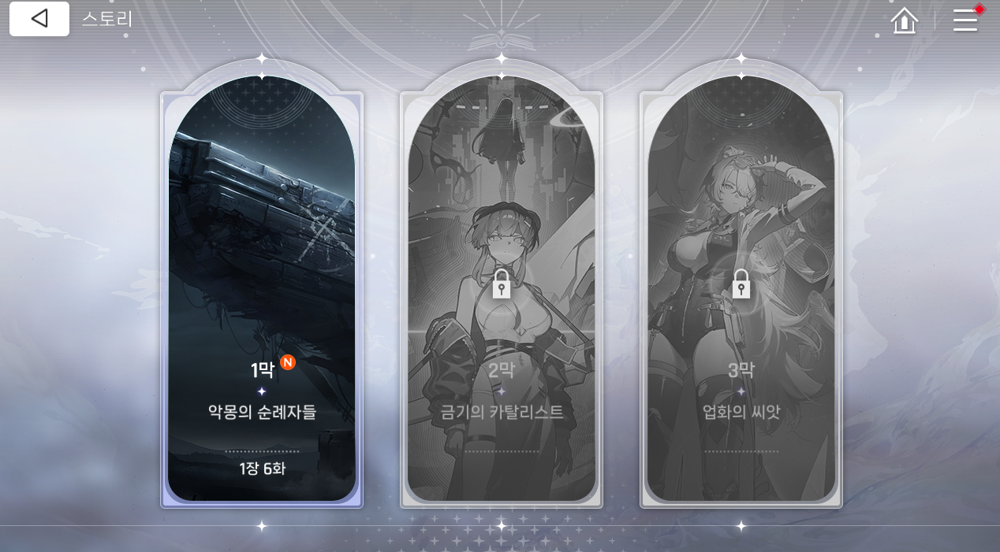
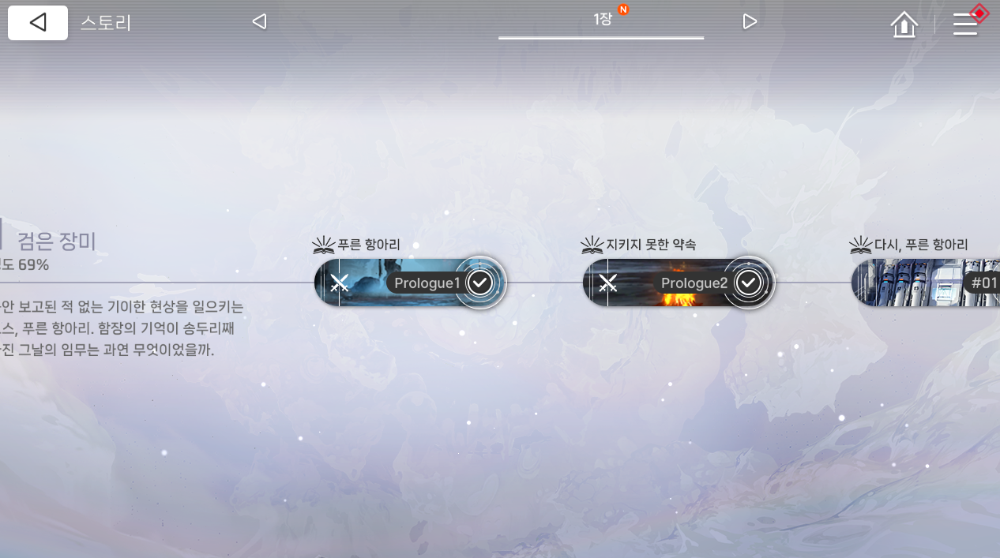
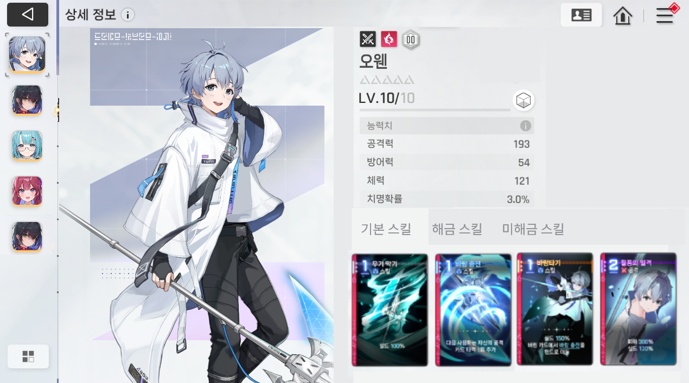
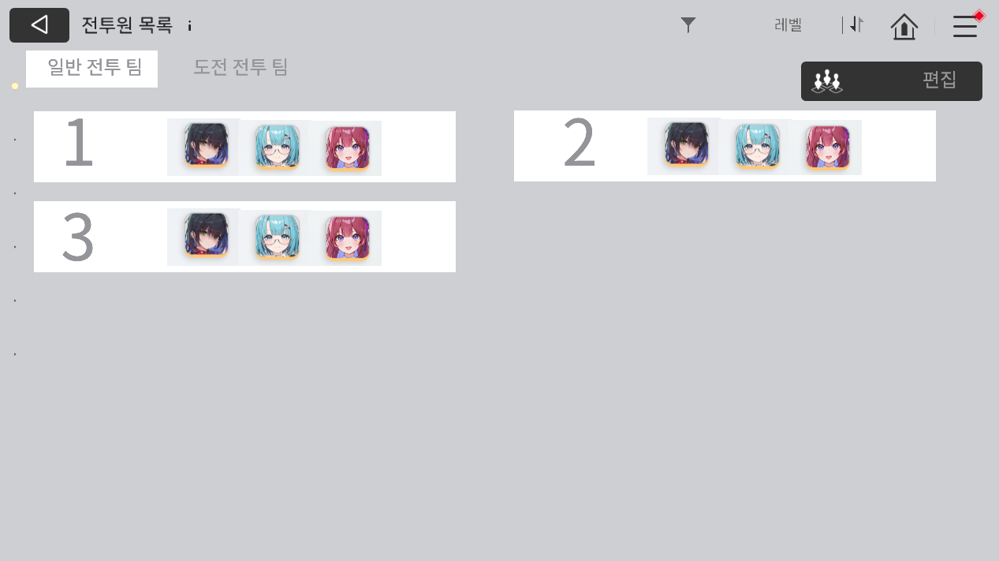

1
로비화면 (메인 메뉴)
전체 레이아웃 · 우측 세로형 네비게이션 · 상단 리소스 바

assets/references/ref_01_lobby.png
주요 요소: 상단 LV·XP 바 / 우측 세로 네비 패널 (스토리·시뮬레이션·카오스 등) / 잠금 아이콘 처리 / 하단 이벤트 배너 / 중앙 캐릭터 일러스트
2
스토리모드 선택 화면
메인 스토리 / 전투 임무 대형 카드 선택

assets/references/ref_02_story_select.png
주요 요소: 전체 화면을 2분할하는 대형 카드 / 카드 하단 진행 상황 텍스트 / 우측 상단 확대 아이콘 / N 뱃지(신규) / 상단바 뒤로가기 + 홈 + 메뉴
3
메인스토리 챕터 선택 (막 선택)
아치형 세로 카드 · 잠금/해금 상태 표시

assets/references/ref_03_story_chapter.png
주요 요소: 아치형(반원 상단) 카드 3장 / 활성 카드 컬러·하이라이트, 잠금 카드 흑백 처리 + 자물쇠 아이콘 / 카드 하단 막 번호·이름·진행 화수 / 흐릿한 배경 아트
4
메인스토리 진행 화면 (스테이지 목록)
가로 스크롤 타임라인 · 에피소드 노드 · 좌측 정보 패널

assets/references/ref_04_story_stage.png

assets/references/ref_04b_story_stage.png
주요 요소: 좌측 현재 에피소드 제목·진행도 / 가로 타임라인 연결선 / 에피소드 노드 (썸네일 + 제목 + 완료✓ 뱃지) / 재생·스킵 버튼 / 상단 장 이동 네비 (◁ 1장 N ▷)
5
캐릭터 정보 화면
3패널 레이아웃 · 능력치 · 기본 스킬 카드

assets/references/ref_05_character.png
주요 요소: 좌측 캐릭터 썸네일 리스트 / 중앙 대형 일러스트 / 우측 이름·별점·레벨 / 능력치 테이블 (공격력·방어력·체력·치명확률) / 기본 스킬 카드 목록
6
팀 구성 화면
2열 그리드 · 팀 슬롯 · 탭 + 편집 버튼

assets/references/ref_06_team.png
주요 요소: 상단 탭 (일반·도전 전투 팀) + 우측 편집 버튼 / 2열 그리드 팀 슬롯 / 슬롯: 대형 번호 + 캐릭터 초상화 3개 / 정렬·필터 컨트롤